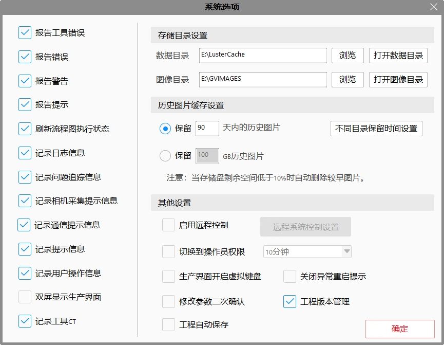
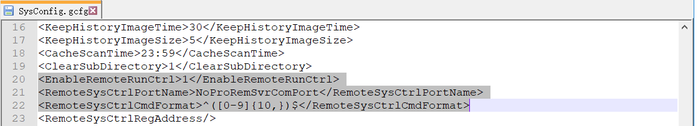
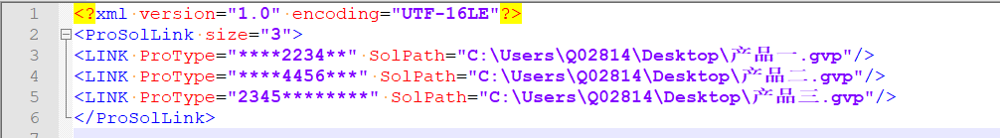
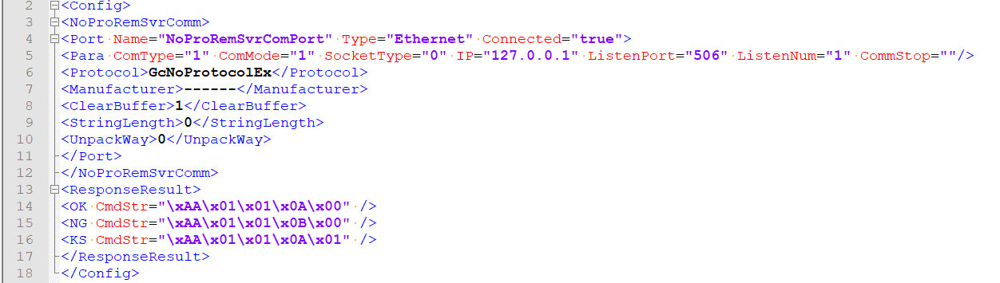
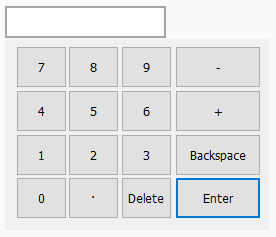
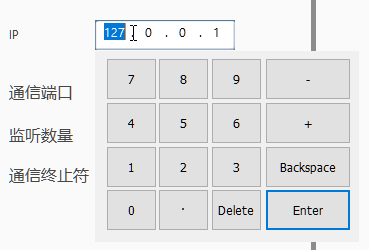
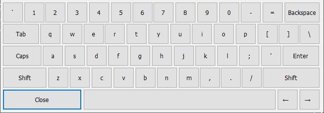

可勾选配置需要记录的信息、报告的错误、图像和数据路径设置、历史图片缓存设置、开启远程系统控制、自动切换到操作员权限、生产界面开启虚拟键盘等。其中报告工具错误、报告错误、报告警告、报告提示、刷新流程图执行状态、记录日志信息、记录问题追踪信息、记录相机采集提示信息、记录通信提示信息、记录提示信息、记录用户操作信息、记录工具CT和工程版本管理在第一次安装时默认是选中状态，其他为非选中状态。重装或升级软件会保留重装前的选中状态。

设置数据目录和图片保存目录。
指自动清理历史图像的一些配置，自动清理历史图片缓存分为按时间清理和按大小清理。
按时间清理：系统自动清理超过设置天数的较早历史图片。
按GB清理：系统自动清理超过设置大小的较早历史图片。
注意
磁盘剩余空间不足10%清理：当磁盘剩余空间不足10%时自动清理较早历史图片。以避免由于磁盘空间不足导致的软件或系统不稳定。
图像文件会放在GVIMAGES文件夹里面。再删除图像的时候，会将GVIMAGES文件夹里面的数据都进行删除，请不要将重要数据放到GVIMAGES文件夹里面。
即开启自动切换工程功能：可以根据PLC发过来的条码（一串数字）自动切换此条码对应的产品工程（即gvp文件），自动保存原来的工程，切换的新工程进入生产界面连续运行状态。对切换的结果进行发送，发送结果可以自定义，只支持命令格式，暂不支持数据发送。
远程控制通信使用描述：
PLC作为通信的客户端，VISIONAssembly软件作为通信的服务端。
PLC使用的欧姆龙和三菱无通信协议；VISIONAssembly软件也是使用无通信协议，可以通过配置文件约定双方通信端口默认（506）、监听数目（默认为1）和通信终止符（默认为none）。此功能的协议只支持无协议通信。通过配置NoProRemSvrComm.xml文件设置。
VISIONAssembly软件将对切换结果进行发送，可以设置发送的指令。通过配置NoProRemSvrComm.xml文件设置。
VISIONAssembly软件需要设置接收数据的指令格式。即系统选项->远程系统控制设置->（输入）指令格式->OK，也可以直接修改配置文件SysConfig.gcfg。
切换功能
自动保存之前的工程，即gvp文件。
切换之后进入生产界面，连续运行状态。（未考虑权限问题）
一种产品对应一个工程。通过识别条码，判断所属的产品，找到对应的工程。通过配置ProductSolution.xml文件设置。
远程控制通信配置文件描述：


NoProRemSvrComm.xml文件，保存的是PLC与VISIONAssembly软件通信的配置信息。Port节点即为无通信协议的一些配置，只可修改ListenPort，ListenNum，CommStop和Name属性。Name属性的值需要与SysConfig.gcfg文件里面的RemoteSysCtrlPortName字段的值一致。
ResponseResult字段，OK的CmdStr值表示工程切换成功，向PLC发送的指令；NG的CmdStr值表示工程切换失败，向PLC发送的指令；KS的CmdStr值表示工程不需要切换，向PLC发送的指令。可以自定义切换成功或失败需要发送的命令格式。目前只支持命令格式。（KS= Keep State）

远程控制通信注意事项
确保远程控制端口的名称保持一致，或者修改“配置文件描述”修改SysConfig.gcfg文件里面的RemoteSysCtrlPortName字段，与NoProRemSvrComm.xml的Name一样。
PLC发过来的条码最后一位和第一位不能是空格；如果中间有空格也算一位。
ProductSolution.xml文件里面的ProType值必须唯一，不能存在重复。
默认指令格式可以不写，建议写上。比如每个条码最少10个数字，那么格式指令可以表示为：^([0-9]{10,})\$，如果存在字母，请参考正则表达式的写法。
指的是开启此选项时，在没有外部硬件输入设备键盘和鼠标的操作时（时间可以设置从1分钟到60分钟不等），软件会自动切换到操作员权限，防止其他人员修改工程逻辑。
指的是生产界面是否开启虚拟键盘，只有不勾选此项并且有外接键盘的情况下不开启，其他情况都开启。
数字键盘：生产界面里面的窗口的Edit和地址控件都支持，对于只能输入数字类型的控件，当此控件获得焦点时，会弹出数字键盘；此控件失去焦点时，或者点击Enter键，此数字键盘会隐藏。见下图。
Enter键的作用类似于外接键盘的Enter键的作用+隐藏窗口的作用。

注意
点击地址控件的分割符“.”才会获取焦点；失去焦点的情况不知，只能点击其他控件，或者点击 Enter键关闭。

全键盘：生产界面里面的窗口的Edit控件都支持，对于不是数字类型的控件，当此控件获得焦点时，会弹出数字键盘；失去焦点时，此键盘会隐藏，见下图。
Caps键的作用类似于外接键盘的Caps Lock键的作用，会切换键盘的大小写；
Close键的作用是隐藏窗口的作用；
Enter键的作用类似于外接键盘的Enter键的作用；
其他键和外接键盘的键的作用一样，比如Tab也是切换光标位置。
